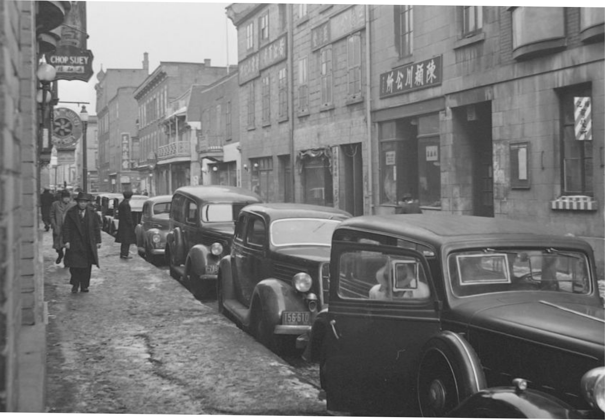

Between Past & Present is a project to draw attention to the erasure of BIPOC history and identity in the bigger narrative of Montreal and Quebec history. This project will also underline our contributions to this city and province and the hardships that we had to face for our rights
To the left
The Lookout, Mount Royal Park,1916
McCord Museum
THE PROJECT
1
To the right Bonsecours Market, St. Paul Street, Montreal, QC, about 1870 McCord Museum

